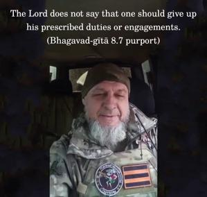

Therefore, Arjuna, you should always think of Me in the form of Kṛṣṇa and at the same time carry out your prescribed duty of fighting. With your activities dedicated to Me and your mind and intelligence fixed on Me, you will attain Me without doubt.

This instruction to Arjuna is very important for all men engaged in material activities. The Lord does not say that one should give up his prescribed duties or engagements. One can continue them and at the same time think of Kṛṣṇa by chanting Hare Kṛṣṇa. This will free one from material contamination and engage the mind and intelligence in Kṛṣṇa. By chanting Kṛṣṇa’s names, one will be transferred to the supreme planet, Kṛṣṇaloka, without a doubt.